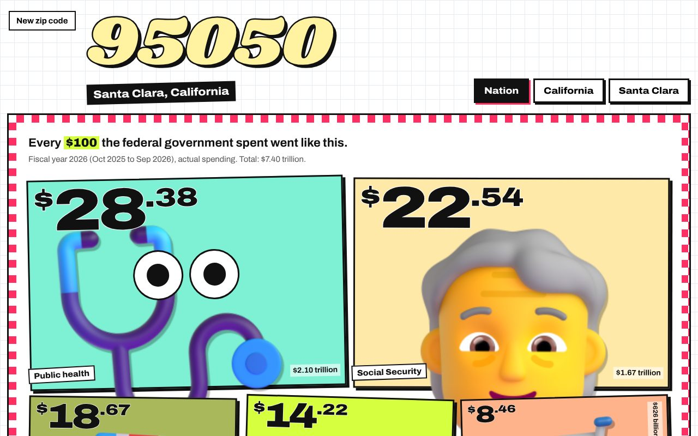
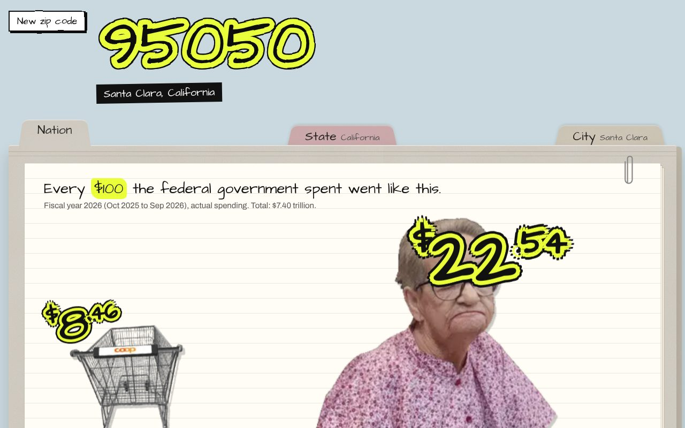

Oct 2026 · SVSD design challenge
Fee Fi Fo Fund
A teen who feels confused about where their paycheck goes needs to see how their taxes are spent, but the answers are buried in budget PDFs written in billions.
Our SVSD submission video, made by Christine Lai.
How It Went
-
Oct 17Research
The Question
Crossing the Bay Bridge, my friend asked why we still pay a toll if our taxes cover roads. I didn't know. Government sites didn't help, and they definitely didn't tell a story.
SVSD's prompt: pick a specific group and build around storytelling. I picked teens and young adults getting their first paychecks.
-
Oct 18Tech
Finding the Data
The Census covers every local government, and California's Controller has all 482 cities. Social Security alone is $22 of every $100 federal dollars, so it had to be in there.
-
Oct 18Design
Every Category in a Box
Accurate, but it read like a spreadsheet.

-
Oct 18Design
Floating, Sized by Money
More alive. I added psychedelic animations and deleted them the same day.

-
Oct 19Design
File Folders
Hand lettering and real folders for Nation, State and City.

-
Oct 21Product
Everything Out of $100
Nobody can picture $1.6 trillion. Everyone gets $100. I added a $100 strip and a story where you're the main character.

Looking Back
- What worked
- Switching from billions to $100. That's when the numbers clicked.
- What I'd do differently
- We didn't make finals. I'd put it in front of real teens before submitting, not after.